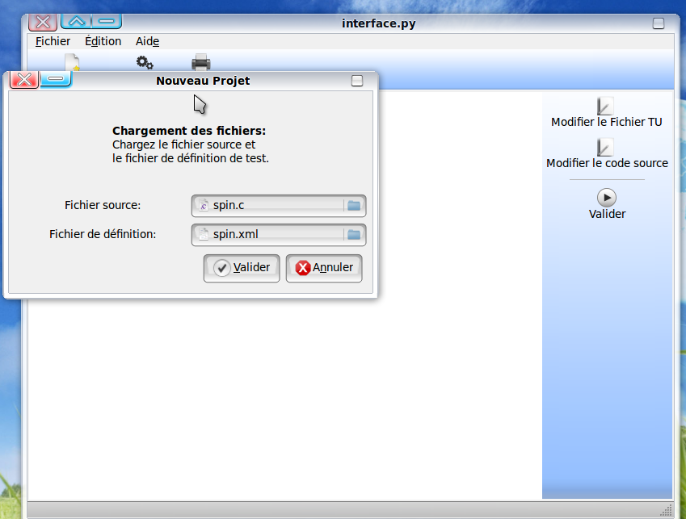

Nouveau Projet :
La commande Nouveau Projet permet à l'utilisateur de créer un nouveau projet; on l'utilise comme suite:
- Double clique sur la commande Nouveau Projet;
vous aurez un aperçu de la fenêtre qui va vous permettre de mentionner les deux champs suivants:
- Le champ Fichier source; ce champ vous permet de saisir le nom du fichier écrit en C
Ou de parcourir et charger le fichier dans le repertoire
- Le champ Fichier de définition: ce champ vous permet de saisir le nom du fichier TU
ou de parcourir et charger le fichier dans le repertoire.
Après avoir saisi les champs vous avez deux options:
- Annuler pour annuler les données saisies
- Valider pour valider les données saisies.
Voici un aperçu de cette image
